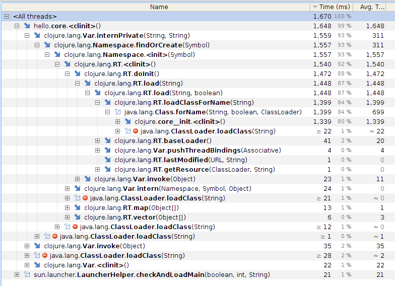

Clojure on Android

Nicholas Kariniemi
Master's Thesis
Aalto University 2015.4.10
What I'm talking about
- The Why of Clojure on Android
- The Why Not of Clojure on Android
- Benchmarking results
- Explanation
- Lean Clojure on Android
- Lean Clojure performance
- Conclusions
Why Clojure on Android?
Why Android?
- Most widely used mobile OS
- Likely to grow with Internet of Things
iOS
Swift
Swift is an innovative new programming language for Cocoa and Cocoa Touch. Writing code is interactive and fun, the syntax is concise yet expressive, and apps run lightning-fast. Swift is ready for your next iOS and OS X project — or for addition into your current app — because Swift code works side-by-side with Objective-C.
Windows Phone
F# is a mature, open source, cross-platform, functional-first programming language. It empowers users and organizations to tackle complex computing problems with simple, maintainable and robust code.
Android
Android development uses an outdated language.
There are no officially-supported alternatives.
What about Clojure?
Clojure: a functional, dynamic, Lisp with good concurrency support that runs on the JVM
Why Clojure? It works well with Java
(ns com.android.helloworld.HelloWorld
(:gen-class
:extends android.app.Activity
:exposes-methods {onCreate superOnCreate})
(:import [android.app Activity]
[android.os Bundle]))
(defn -onCreate [this #^android.os.Bundle bundle]
(.superOnCreate this bundle)
(.setContentView this com.android.helloworld.R$layout/main))
Why Clojure? Functional goodness
(defn fetch-users []
(->> users
Observable/from
(rx/drop 1)
(rx/map clojure.string/lower-case)
(rx/map (fn [v] {:id 1234 :name v}))
(rx/map to-json)))
Android Java equivalent
public static Observable fetchUsers(){
return Observable.from(userNames)
.skip(1)
.map(new Func1<String, String>() {
@Override
public String call(String userName){
return userName.toLowerCase();
}
})
.map(new Func1<String, HashMap<String, String>>() {
@Override
public HashMap<String, String> call(String userName){
HashMap<String, String> map = new HashMap<String, String>();
map.put("id", "1234");
map.put("name", userName);
return map;
}
})
.map(new Func1<HashMap<String, String>, String>() {
@Override
public String call(HashMap<String, String> userData){
return toJson(userData);
}
});
}
Why Clojure? Data as code
(def main-view
[:linear-layout {:orientation :vertical}
[:linear-layout {:orientation :horizontal}
[:text-view {:text "Location: "}]
[:text-view {:def `location-text :text ""}]]
[:linear-layout {:orientation :horizontal}
[:text-view {:text "Signal strength: "}]
[:text-view {:def `strength-text :text ""}]]
[:linear-layout {:orientation :horizontal}
[:text-view {:text "Carrier: "}]
[:text-view {:def `carrier-text :text ""}]]])
(defactivity org.antenna.MainActivity
:def main-activity
:on-create (fn [this bundle]
(on-ui (set-content-view! main-activity (make-ui main-view)))
(display-and-send-current-data main-activity)))
<FrameLayout xmlns:android="http://schemas.android.com/apk/res/android"
android:id="@+id/contactinfoview"
android:layout_width="match_parent"
android:layout_height="match_parent"
android:gravity="center"
android:clickable="true"
android:background="@color/tb_background_grey"
android:orientation="vertical">
<LinearLayout
android:layout_width="match_parent"
android:layout_height="wrap_content"
android:orientation="vertical">
<LinearLayout
android:id="@+id/upperlayout"
android:layout_width="match_parent"
android:layout_height="wrap_content">
<LinearLayout
android:layout_width="match_parent"
android:layout_height="wrap_content"
android:layout_marginTop="71dp"
android:layout_marginLeft="228dp"
android:layout_marginRight="228dp"
android:orientation="horizontal">
<FrameLayout
android:layout_width="140dp"
android:layout_height="114dp">
...
Why Clojure?
- Immutability as default + immutable data structures
- Sensible concurrency: STM, core.async
- Dynamic development (more on this later)
(ns com.android.helloworld.HelloWorld
(:gen-class
:extends android.app.Activity
:exposes-methods {onCreate superOnCreate})
(:import [android.app Activity]
[android.os Bundle]))
(defn -onCreate [this #^android.os.Bundle bundle]
(.superOnCreate this bundle)
(.setContentView this com.android.helloworld.R$layout/main))

What do you think is Clojure's most glaring weakness / blind spot / problem?
2013 State of Clojure Survey (Chas Emerick)
- slow start-up time of jvm
- JVM Prejudice, I used to have such against Java. JVM startup time still sucks
- its usefulness in many potential applications is limited by the jvm's startup time
- start up time and deployed package size (these are related, and not just the jvm's fault)
- That damn jvm startup time
- It's partly because of the JVM, but clojure programs are really slow to start
- JVM startup overhead, documentation
- JVM bootstrap time
- Language runtime bootstrapping takes way too much time, which renders the otherwise desirable scripting story impractical.
- Startup time for quick scripts (and I'm not a fan of the various 'hot JVM' solutions)
2013 State of Clojure Survey Responses
Alex Miller analysis of 2013 State of Clojure survey:
"By far the largest subset of performance-related complaints were about JVM startup time. Phil Hagelberg has also reported that this is one of, perhaps the highest, complaint of leiningen users as well.... JVM startup time is never going to go away..., but there are likely still things that can be done to decrease Clojure loading time or better control the loading of code"
Responses: How to speed up startup time (1)
- David Nolen: Try the client JVM.
Responses: How to speed up startup time (2)
- Try the client JVM.
- Try warming up Clojure first.
Responses: How to speed up startup time (3)
- Try the client JVM.
- Try AOT compilation.
- Try using a persistent JVM.
Conclusion
Or is it?
Let's try it ourselves.
Java & Clojure Hello World
// Java hello world
public class Hello {
public static void main(String[] args){
System.out.println("Hello world");
}
}
// Clojure hello world
(ns hello.core
(:gen-class))
(defn -main [& args]
(println "Hello world"))
# Compile
$ javac Hello.java
$ javac -cp .:clojure-1.6.0.jar -Dclojure.compile.path=./ clojure.lang.Compile hello.core
# Run
$ time java Hello
$ time java -cp ../../clojure-1.6.0.jar:target/classes hello.core
Java & Clojure Hello World Run Times
$ time java Hello
Hello world
0.03user 0.00system 0:00.04elapsed 102%CPU (0avgtext+0avgdata 15444maxresident)k
0inputs+64outputs (0major+4004minor)pagefaults 0swaps
$ time java -cp ../../clojure-1.6.0.jar:target/classes hello.core
Hello world
0.99user 0.03system 0:00.80elapsed 128%CPU (0avgtext+0avgdata 66316maxresident)k
0inputs+64outputs (0major+19191minor)pagefaults 0swaps
Note:
- AOT-compiled
- Client JVM
- Same JVM for Java and Clojure (so persistent JVM wouldn't affect it)
But that's just one test!
You can't conclude anything from one little test.
Desktop (JVM) Clojure Hello World (average of 20 runs)
So... what about my Android?
But that's Dalvik. I'll use ART!
(Dalvik is the Android virtual machine for versions up to KitKat/4.4.
ART is the new virtual machine starting with Lollipop/5.0.)
ART is a bit faster
But that's just one device! Other devices might be faster!
Sure, a little:
But that's just a stupid hello world app.
Real apps are different!
Larger apps start much slower:
Hello benchmark: Dependencies benchmark:
(ns benchmark.dependencies
(:gen-class)
(:require [rx.lang.clojure.core :as rx]
[rx.lang.clojure.blocking :as rxb]
[cognitect.transit :as transit]
clojure.string)
(import [java.io ByteArrayOutputStream]
rx.Observable))
(defn to-json [input]
(let [out (ByteArrayOutputStream. 4096)
writer (transit/writer out :json)]
(transit/write writer input)
(.toString out)))
(def users ["Tom" "Dick" "Harry"])
(defn fetch-users []
(->> users
Observable/from
(rx/drop 1)
(rx/map clojure.string/lower-case)
(rx/map (fn [v] {:id 1234 :name v}))
(rx/map to-json)))
(defn -main [& args]
(let [users-json (fetch-users)]
(rxb/doseq [user users-json] (println user))))
Conclusion
Why?!?!

I don't know. Profile it.
Clojure Hello World profiled startup
Clojure JVM startup breakdown
Clojure Dalvik startup breakdown
clojure/core__init.class
static {
// Create Vars and metadata (11/17%)
__init0();
__init1();
__init2();
__init3();
// ...intermediate lines omitted
__init23();
// (0%)
Compiler.pushNSandLoader(Class.forName("clojure.core__init").getClassLoader());
try{
// Assign Vars and metadata, load external functions (89/83%)
load();
// (0%)
Var.popThreadBindings();
}
finally
{
// (0%)
Var.popThreadBindings();
throw finally;
}
}
So if you use a function in your program:
(cons 1 '(2 3))
It can be grabbed from the runtime namespace like this:
RT.var("clojure.core", "cons").getRawRoot().invoke(args);
Why? Clojure is dynamic.
- Dynamic typing
Dynamic typing. Yes but no. We're not talking about that.- Dynamic: available at run time (not just compile time)
- Clojure is dynamic because it lets you do more stuff at run time
- Dynamic binding
- + reified language constructs
- + dynamic compilation & evaluation
- --> Dynamic development (REPL)
Reification: turning a compiler detail into something you can play with at run time
Why? Dynamism is a Good Thing*
Dynamic var binding
; Create a Var and bind its root to the value 1
hello.core=> (def foo 1)
#'hello.core/foo
hello.core=> (def print-foo (fn [] (println foo)))
#'hello.core/print-foo
; Print by looking up runtime value of var
hello.core=> (print-foo)
1
nil
hello.core=> (def foo 2)
#'hello.core/foo
; It still works if we change the var value
hello.core=> (print-foo)
2
Dynamic namespace binding
; Create ns (compile to JVM class, load into JVM)
user=> (ns hello)
nil
; Compile function at run time to JVM class
; Insert it into existing namespace
hello=> (defn helloworld [] (println "Hey world!"))
#'hello/helloworld
; Execute normally
hello=> (helloworld)
Hey world!
nil
; Or call it manually using underlying JVM classes
hello=> (clojure.lang.RT/var "hello" "helloworld")
#'hello/helloworld
hello=> (.getRawRoot (clojure.lang.RT/var "hello" "helloworld"))
#<hello$helloworld hello$helloworld@2b5071f6>
hello=> (.invoke (.getRawRoot (clojure.lang.RT/var "hello" "helloworld")))
Hey world!
nil
; Inspect reified namespace
; Symbol 'helloworld in namespace hello
; points to a Var with a root binding of
; our defined function
hello=> (ns-publics 'hello)
{helloworld #'hello/helloworld}
Dynamic, REPL-driven development
user=> (start-system)
Connected to mongo at localhost: grub-dev
Started server on localhost: 3000
user=> system
{:db-name "grub-dev"
:db #<DBApiLayer grub-dev>
:db-conn #<MongoClient ...>
:port 3000
:stop-server #<clojure.lang.AFunction$1@7ed72ded>,
:states #<Atom@610863a9:
[{:tag 0
:grubs { :grub-167afa69-f812-455a-bb8a-4b819236011a
{:id "grub-167afa69-f812-455a-bb8a-4b819236011a"
:text "Milk"
:completed false}}}]>}
user=> (reset! (:states system) [])
[]
user=> system
{ :db-name "grub-dev"
:db #<DBApiLayer grub-dev>
:db-conn #<MongoClient ...>
:port 3000
:stop-server #<clojure.lang.AFunction$1@7ed72ded>,
:states #<Atom@610863a9: []>}
(Stuart Sierra "Reloaded" workflow)
Which is like swapping your engine while driving
But is dynamism always a Good Thing?
- The magic depends on dynamic binding and evaluation
- i.e. somewhere we need to set up namespaces and vars to point to the right things
- Clojure does it on startup -> Slow startup
So how can we make Clojure start fast?
Lean Clojure
- Idea: trade dynamic features for performance
- Projects: Oxcart and Skummet (summer 2014)
- Oxcart: based on Clojure in Clojure compiler
- Currently compiles a limited subset of Clojure so not discussed here.
- Skummet: based on standard compiler
- Mutable vars -> static class fields
- Metadata trimming
- No emission of macros
Skummet in one diagram*

Skummet
- Main change: mutable vars -> static class fields
- What we (hope to) get:
- Faster startup time from simpler loading process
- Faster execution from fewer indirect calls Old:
New:RT.var("clojure.core", "cons").getRawRoot().invoke(args);clojure.core$cons.invoke(args);
- Dynamic binding (*except when we explicitly need it)
- Dynamic evaluation (for lean code)
- Dynamic development (for lean code)
Benchmark startup times
Conclusions
- Clojure starts slowly (2s minimum)
- ...even on ART (1.5s minimum)
- ...and it scales upwards quickly (deps benchmark: 2-2.7s)
- Lean Clojure helps (~0.7s minimum)
- ...but it's not good enough (Java: 0.1s minimum)
Possible further Lean Clojure changes
- Compile functions as static methods
- Dependency shaking
- Lazy var loading
Will I ever be able to use Clojure on Android?
Yes, if:- a) You don't care about startup time → use Clojure (now)
- b) Motivated developer(s) continue lean Clojure idea → use new lean Clojure (sometime)
- c) ClojureScript + wrapper framework (React Native?) → use ClojureScript (soon)